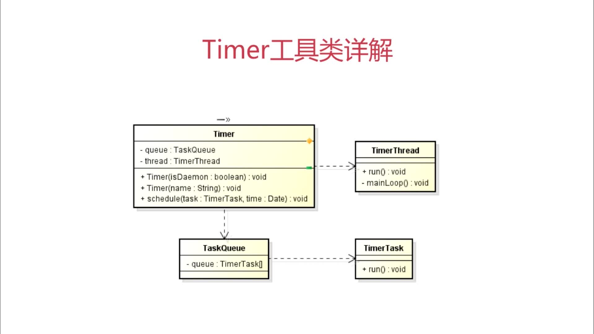

Java 定时任务调度工具详解之 Timer
定时任务调度
定义：
基于给定的时间点，给定的时间间隔或者给定的执行次数自动执行的任务
Timer 和 Quartz
Timer： 有且仅有一个后台线程对多个业务线程进行定时定频率的调度
主要构件
Timer -定时调用-> TimerTask

定时函数的用法
// 延时执行一次 public void schedule(TimerTask task, long delay) // 定时执行一次 public void schedule(TimerTask task, Date time) // 延时间隔执行 public void schedule(TimerTask task, long delay, long period) // 定时间隔执行 public void schedule(TimerTask task, Date firstTime, long period) // 延时间隔执行 public void scheduleAtFixedRate(TimerTask task, long delay, long period) // 定时间隔执行 public void scheduleAtFixedRate(TimerTask task, Date firstTime, long period)
代码实例
package timer; import java.text.SimpleDateFormat; import java.util.Calendar; import java.util.Timer; import java.util.TimerTask; class Util { public static String getCurrentDateTime() { Calendar calendar = Calendar.getInstance(); SimpleDateFormat dateFormat = new SimpleDateFormat("yyyy-MM-dd HH:mm:ss"); return dateFormat.format(calendar.getTime()); } } class MyTimerTask extends TimerTask { @Override public void run() { System.out.println("MyTimerTask is Running " + Util.getCurrentDateTime()); } } public class TimerDemo { public static void main(String[] args) { Timer timer = new Timer(); // 延时0s之后，每隔1s执行一次 timer.schedule(new MyTimerTask(), 0L, 1000L); } }
执行结果
MyTimerTask is Running 2020-06-22 22:49:45 MyTimerTask is Running 2020-06-22 22:49:46 MyTimerTask is Running 2020-06-22 22:49:47 ...
其他函数
TimerTask.cancel() 取消【当前】 TimerTask 里的任务 TimerTask.scheduledExecutionTime() 返回此任务最近实际执行的已安排执行的时间 Timer.cancel()终止此计时器，丢弃【所有】当前已安排的任务 Timer.purge() 从此计时器的任务队列中移除所有已取消的任务，返回移除数量
区别
schedule 和 scheduleAtFixedRate
1、首次计划执行的时间早于当前的时间
schedule fixed-delay
如果第一次执行时间被 delay 了，随后的执行时间按照上一次实际执行【完成的时间点】进行计算
scheduleAtFixedRate fixed-rate
如果第一次执行时间被 delay 了，随后的执行时间按照上一次【开始的时间点】进行计算，并且为了赶上进度会多次执行任务，因此 TimerTask 中的执行体需要考虑同步
代码示例
package timer; import java.text.SimpleDateFormat; import java.util.Calendar; import java.util.Date; import java.util.Timer; import java.util.TimerTask; public class TimerDemo { public static void main(String[] args) { Timer timer = new Timer(); SimpleDateFormat dateFormat = new SimpleDateFormat("yyyy-MM-dd HH:mm:ss"); Calendar calendar = Calendar.getInstance(); calendar.add(Calendar.SECOND, -10); timer.schedule(new TimerTask() { @Override public void run() { System.out.println(dateFormat.format(new Date())); } }, calendar.getTime(), 2000L); } }
执行结果
timer.schedule 2020-06-22 23:16:56 2020-06-22 23:16:58 2020-06-22 23:17:00 timer.scheduleAtFixedRate 2020-06-22 23:18:19 2020-06-22 23:18:19 2020-06-22 23:18:19
2、任务执行所需时间超出任务的执行周期间隔
schedule
下次执行时间相对于上一次实际执行【完成的时间点】，因此执行时间会不断延后
scheduleAtFixedRate
下一次执行时间相对于上一次【开始的时间点】，因此执行时间一般不会延后，因此存在并发性
package timer; import java.text.SimpleDateFormat; import java.util.Date; import java.util.Timer; import java.util.TimerTask; public class TimerDemo { public static void main(String[] args) { Timer timer = new Timer(); SimpleDateFormat dateFormat = new SimpleDateFormat("yyyy-MM-dd HH:mm:ss"); timer.scheduleAtFixedRate(new TimerTask() { @Override public void run() { try { Thread.sleep(3000L); } catch (InterruptedException e) { e.printStackTrace(); } System.out.println(dateFormat.format(new Date())); } }, 0L, 1000L); } }
timer.schedule 2020-06-22 23:24:08 2020-06-22 23:24:11 2020-06-22 23:24:14 timer.scheduleAtFixedRate 2020-06-22 23:25:18 2020-06-22 23:25:21 2020-06-22 23:25:24
Timer 综合应用
执行 5 次任务，就停止定时器，并退出程序
package timer; import java.text.SimpleDateFormat; import java.util.Date; import java.util.Timer; import java.util.TimerTask; // 自定义任务 class MyTimerTask extends TimerTask { private SimpleDateFormat dateFormat = new SimpleDateFormat("yyyy-MM-dd HH:mm:ss"); private int count = 0; private Timer timer; public MyTimerTask(Timer timer) { this.timer = timer; } @Override public void run() { System.out.println(dateFormat.format(new Date())); // 判断执行满5次就停止 this.count++; if (this.count >= 5) { // 停止当前任务 this.cancel(); // 停止定时器，并退出程序 this.timer.cancel(); } } } public class TimerDemo { public static void main(String[] args) { Timer timer = new Timer(); timer.schedule(new MyTimerTask(timer), 0L, 1000L); } }
打印结果
2020-06-23 20:46:11 2020-06-23 20:46:12 2020-06-23 20:46:13 2020-06-23 20:46:14 2020-06-23 20:46:15
Timer 缺陷
1、管理并发任务的缺陷
Timer 有且仅有一个线程去执行定时任务，如果存在多个任务，且任务时间过长，会导致执行效果与预期不符
2、当任务抛出异常时的缺陷
如果 TimerTask 抛出 RuntimeException，Timer 会停止所有任务的运行
3、以下场景不建议使用
- 对时效性要求较高的多任务并发作业
- 对复杂的任务的调度